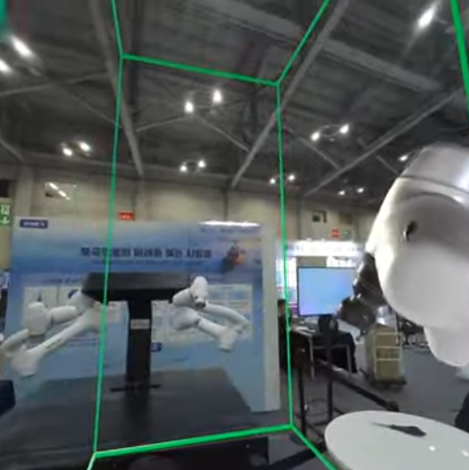
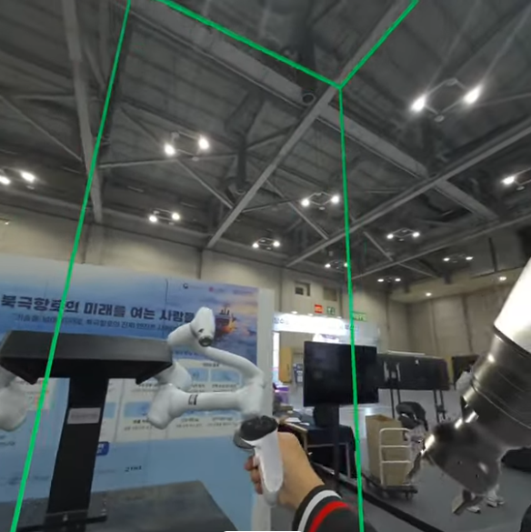
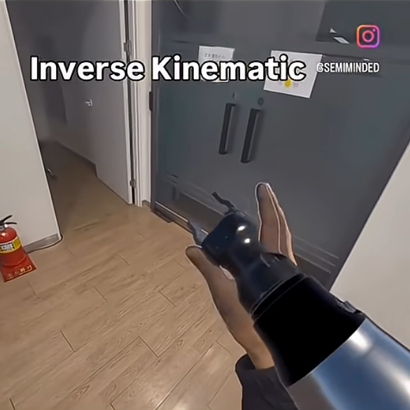
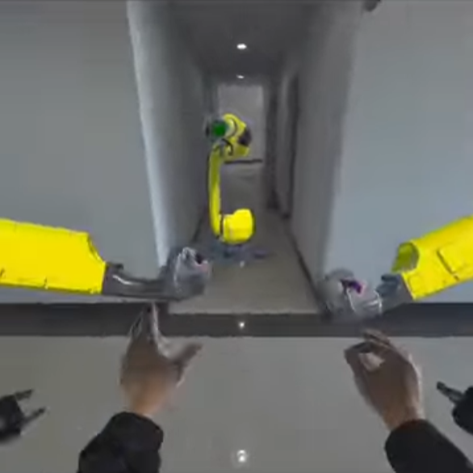
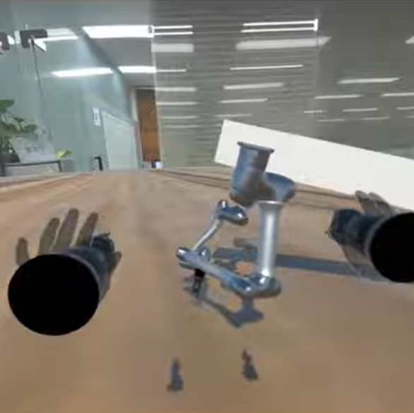
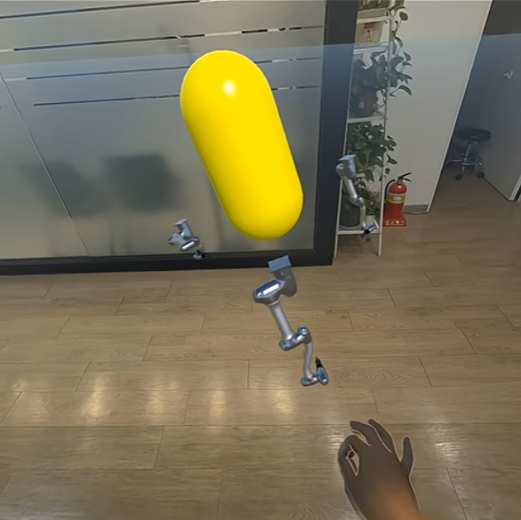
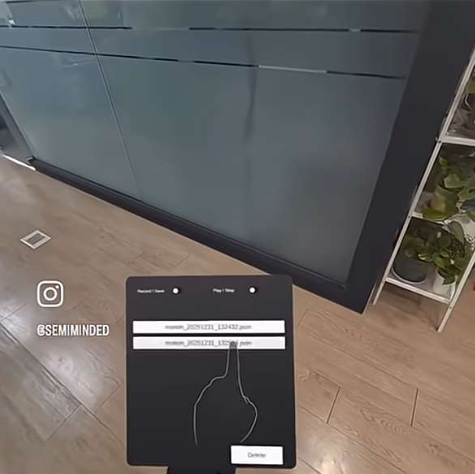

VR 로봇 원격 조종 시스템 + 자체 IK 솔버
Meta Quest 3 VR 컨트롤러로 산업용 로봇(Doosan A0912)을 원격 조종한 프로젝트입니다. Unity VR ↔ Flask ↔ RoboDK ↔ 실 로봇 파이프라인과 안전 로직을 구현했고, 이후 Jacobian 기반 IK 솔버 구현으로 이어졌습니다.


2025 대한민국 해양 모빌리티·안전 엑스포
2025.11.25 - 11.27 · 부산 벡스코 제1전시장 · 주제: 북극항로와 해양 밸류체인
문제 정의
산업용 로봇을 VR로 안전하게 조종하기
Meta Quest 3 VR 컨트롤러로 산업용 로봇(Doosan A0912)을 실시간 원격 조종하는 시스템이 필요했다. 단순한 데모가 아니라 RoboDK SIM과 실 로봇 양쪽에서 동작해야 하고, 엑스포 현장에서 실제 관람객 앞에서 시연해야 했다.
핵심 제약: (1) 안전 — 사람과 로봇이 같은 공간에 있을 때 절대 사고가 없어야 함, (2) 실시간 — VR 입력의 지연이 30ms 이하, (3) 정확성 — VR 좌표계와 로봇 좌표계 매핑 오차 최소화.
해결: Unity VR ↔ Flask ↔ RoboDK Python API ↔ 실 로봇 전체 파이프라인을 설계·구현했습니다. 4-스레드 UDP 브릿지, Deadman 스위치, SAFE_BOX, 특이점 방지, EMA 필터, 캘리브레이션 시스템까지 포함해 실제 시연 가능한 구조를 만들었습니다.
Quest 3
VR HMD · 컨트롤러
A0912
Doosan 6DOF Robot
4 Threads
UDP Real-time Bridge
Jacobian
자체 IK Solver (R&D)
구조 설계
4-스레드 UDP 실시간 브릿지
VR 컨트롤러 입력 → 로봇 명령을 4개의 독립 스레드로 분리해 실시간성을 보장. Deadband·Resend Skip·Steady-state Suppression으로 네트워크 부하 최소화.
-
CmdReceiverUnity → Flask 명령 수신 -
StateReader로봇 상태 폴링 -
StateSenderUnity로 상태 전송 -
CommandSender로봇 명령 발행 + 등가각 선택
안전 로직
엑스포 현장에서 사람이 옆에 있는 상태로 시연. 실패할 수 없는 안전 요건.
- · Deadman 스위치 (그립 >0.5)
- · SAFE_BOX 영역 강제 클램프
- · 특이점 방지 + Roll 스케일링
- · 속도 250mm/s · 가속도 1000mm/s² 클램프
- · Collision Clear · Drift Resync
UNITY_TO_BASE
Quest 3 ↔ Robot Base 좌표계
캘리브레이션
/calibrate/add → /solve 자동 행렬
AI 협업 흐름
AI 협업을 활용한 구현 방식
이 프로젝트에서 AI 협업은 Flask 서버, 4-스레드 UDP 브릿지, 안전 로직처럼 반복 구현량이 큰 구간에 집중적으로 사용했습니다.
중요했던 것은 AI 사용 자체보다, 로봇 안전, 실시간 통신, Unity XR, 좌표계 제약을 정확히 전달하고 계속 검증하는 방식이었습니다.
그 결과 실제 산업용 로봇 조종과 부산 벡스코 시연까지 이어졌습니다.
- · Unity 21개 C# 파일
- · Python 브릿지 2개 (787 LOC)
- · RoboDK SIM + 실 로봇 양쪽 안정 매핑
- · 엑스포 시연 진행
자체 IK 솔버 — RoboDK 의존 없이 확장한 후속 R&D
IK 알고리즘 자체부터 자체 구축
엑스포 프로젝트(MetaArm)는 RoboDK API에 IK 해석을 위임했지만, 별도 R&D(ik_meta)에서 IK 알고리즘 자체부터 전체 파이프라인까지 직접 확장 구현했습니다.
Jacobian 기반 6DOF, 관절별 Weight Override, External Feedback (로봇 측정값 seed), 타겟 Rate Limit (선속도 m/s · 각속도 deg/s)
관절 상태를 녹화 → 파일 저장 → 재생하는 모션 파이프라인. Recorder · Storage · Player 분리.
6축 개별 관절 리밋 클램프, 동적 속도 계산 (변위 비례), 특이점 감지, deg/rad 혼동 방지 휴리스틱.
Jacobian 기반 IK는 일반적으로 로보틱스 전문 개발자가 수주~수개월 걸려 구현하는 영역. 이 후속 R&D는 로봇 제어 경험이 단순 연동을 넘어 수학 알고리즘과 실시간 제약까지 다룰 수 있는 수준으로 이어졌다는 점을 보여 줍니다.
R&D 시연 갤러리





프로젝트 의미
엑스포 시연
2025 대한민국 해양 모빌리티 안전 엑스포(부산 벡스코)에서 현장 시연을 진행했습니다. 관람객 앞에서 VR 컨트롤러로 실제 산업용 로봇을 조종했습니다.
"산업용 제약과 안전 조건 아래에서 구현과 검증을 반복해 실제 로봇 시연까지 진행한 사례."
엑스포 시연
2025 해양 모빌리티 안전 엑스포 · 부산 벡스코
구현 범위
Flask · UDP 브릿지 · IK 솔버 전체
후속 구현
Unity 21 C# + Python 787 LOC